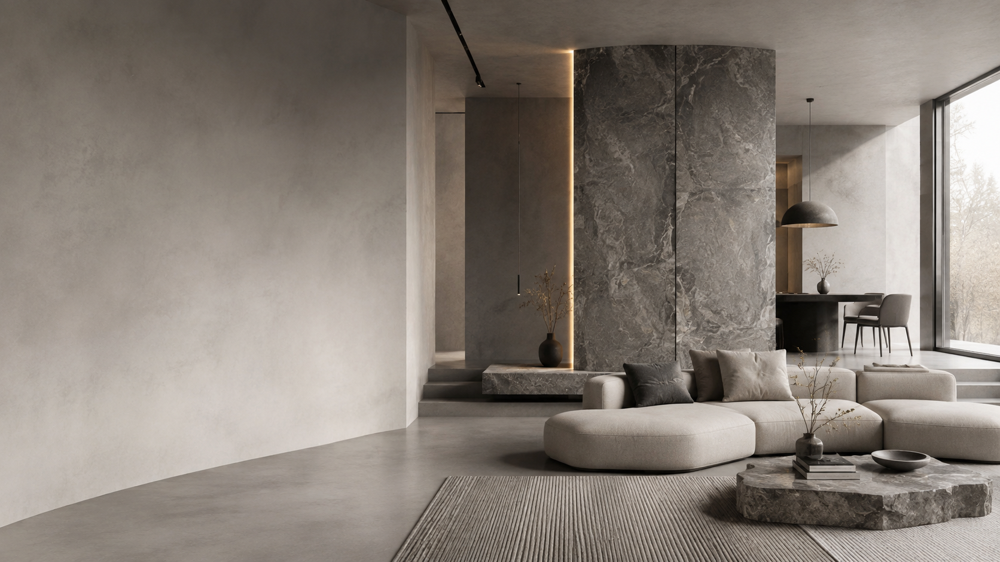
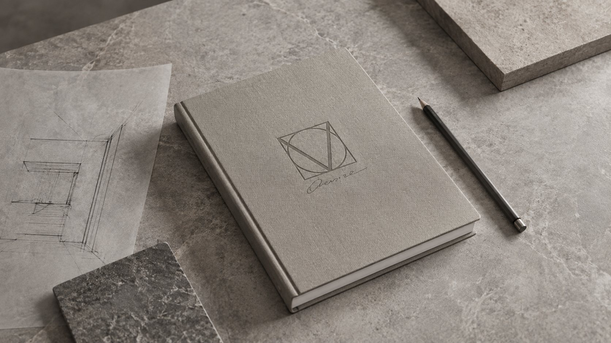
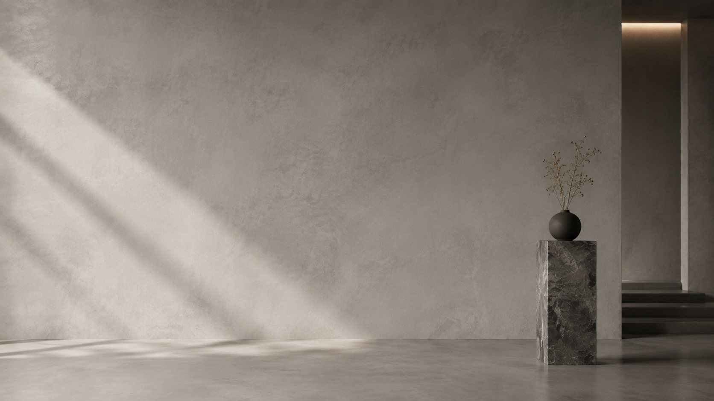

Łazienka / miedź i grafit
WNĘTRZA — CIEMNA PALETA

Projektowanie wnętrz i ogrodów od pierwszej koncepcji po dokumentację wykonawczą.
WNĘTRZA / KRAJOBRAZ / JASŁO
Pracownia Oversize łączy projektowanie wnętrz i krajobrazu, prowadząc inwestycję spokojnie, konsekwentnie i z dbałością o każdy etap.
WYBRANE REALIZACJE
Wybrane kadry pokazują różne kierunki pracowni — od ciemnych wnętrz premium, przez jasne poddasza, po ogród i elewację.
WNĘTRZA — CIEMNA PALETA
WNĘTRZA — NATURALNE DREWNO
KRAJOBRAZ — ARCHITEKTURA ZEWNĘTRZNA
WNĘTRZA — CIEPŁA PALETA

W zależności od potrzeb współpraca może objąć konsultacje, projekt koncepcyjny, pełny projekt wykonawczy, projektowanie online i nadzór nad realizacją.
Zobacz pełny zakres →PEŁNY ZAKRES PRACOWNI
Od konsultacji i koncepcji, przez projekty wykonawcze, po ogród, elewację i kosztorysy. Rozwiń wybraną pozycję, aby zobaczyć szczegóły.
Pomoc w urządzaniu wnętrza, wskazówki dotyczące aranżacji, doboru kolorystyki, dekoracji, odpowiedzi na pytania z zakresu funkcjonalności, estetyki, dobór materiałów wykończeniowych, rozwiązań technicznych, jak również sprawdzonych ekip wykonawczych.
Indywidualny projekt koncepcyjny wnętrza przedstawiony w postaci rzutów i fotorealistycznych wizualizacji.
Indywidualny projekt koncepcyjny zawierający fotorealistyczne wizualizacje, rzuty oraz pełną dokumentację techniczną wnętrza gotową do przekazania wykonawcom.
Wykonanie projektu koncepcyjnego wraz z nadzorem nad przebiegiem prac budowlanych, czuwanie nad zgodnością realizacji z wykonanym projektem.
Projekt koncepcyjny wraz z wizualizacjami (możliwy również projekt wykonawczy po uprzednim przekazaniu stosownych dokumentów, inwentaryzacji) — całość projektu wykonywana online.
Wykonanie pełnej dokumentacji technicznej dla wykonawców.
Unikatowe meble naszego autorskiego projektu, wykonane przez współpracujących z nami fachowców. Projektujemy meble na indywidualne zamówienie.
Przygotowanie nieruchomości do sprzedaży lub wynajmu podnosząc jego walory estetyczne, przeprowadzenie metamorfoz, zmiana układu funkcjonalnego.
Aranżacja przestrzeni mieszkalnej — ciekawe i praktyczne rozwiązania z uwzględnieniem szczególnych potrzeb osób niepełnosprawnych.
Wykonanie pełnej inwentaryzacji zieleni dla inwestorów prywatnych, deweloperów, jednostek państwowych. Wykonanie opracowania gospodarki zielenią istniejącą ze wskazówkami do pielęgnacji, wytycznymi do wycinki drzew w złym stanie zdrowotnym, czy kolidujące z inwestycją. Sporządzamy wniosek o wycinkę wraz z tabelą opłat. Dzięki współpracy z geodetami jesteśmy w stanie precyzyjnie określić lokalizację drzew i krzewów w terenie.
Projekt ogrodu składa się z kilku arkuszy, które uwzględniają wszystkie projektowane rozwiązania: nasadzenia roślinne, zagospodarowanie przestrzenne oraz funkcjonalne terenem, rzuty nawierzchni, arkusze techniczne z małą architekturą gotowe do przekazania wykonawcom, arkusz przedstawiający projekt nawadniania, arkusz oświetlenia ogrodowego itp. — zależne od potrzeb klienta. Dodatkowo sporządzane są fotorealistyczne wizualizacje 3D oraz wirtualny spacer po ogrodzie.
Wzory nawierzchni, układy kolorystyczne, dobór materiałów, kosztorys budowlany, realizacja przez wykonawców.
Dobór gatunkowy roślin, wytyczne względem pielęgnacji, kosztorysy nasadzeń.
Ogrodzenia, śmietniki, budynki gospodarcze, altany, tarasy oraz inne elementy małej architektury ogrodowej — dobór materiałowy, rysunki techniczne, przekroje, realizacja przez wykonawców.
Dobór materiałów wykończeniowych, kolorystyki, stolarki. Elewacje przedstawione w postaci widoków oraz modelu 3D.
Opracowanie profesjonalnej dokumentacji kosztorysowej uwzględniającej: przedmiary robót, kosztorysy szczegółowe, kosztorysy inwestorskie, kosztorysy ofertowe i zamienne, zestawienia kosztów inwestycji. Przygotowujemy kompleksowe kosztorysy budowlane.

Projektujemy przestrzenie, które porządkują codzienność.
Projekty wnętrz i ogrodów — Jasło